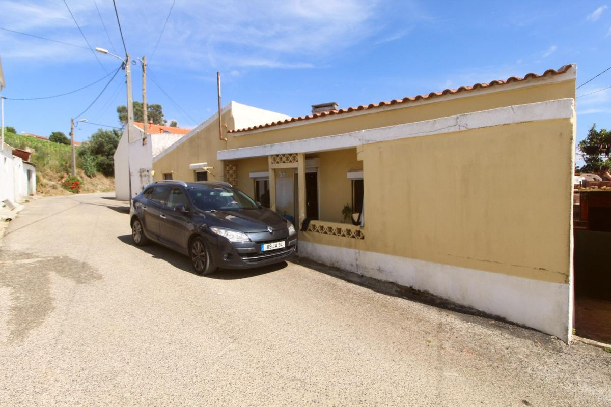
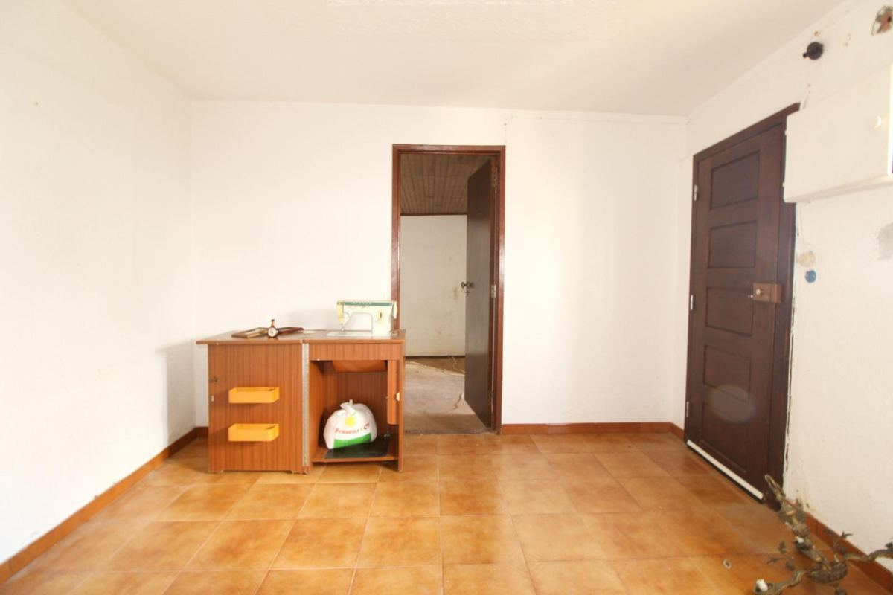
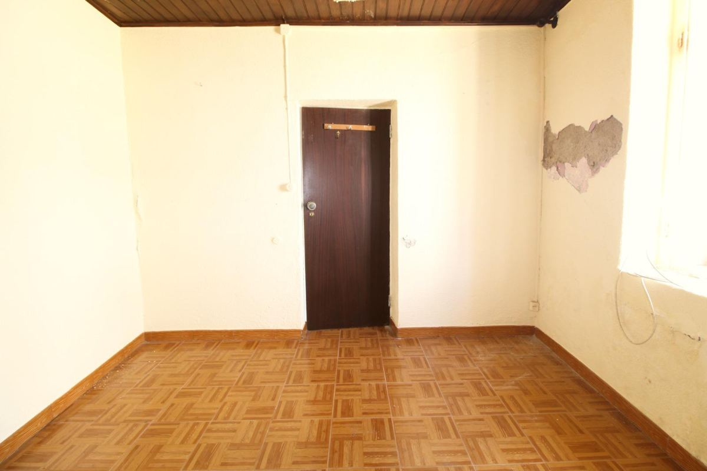
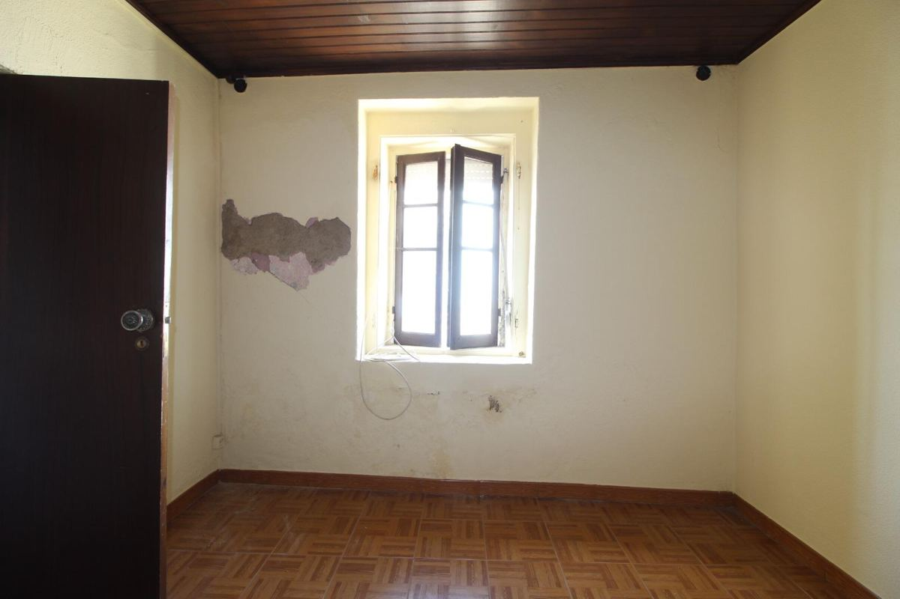
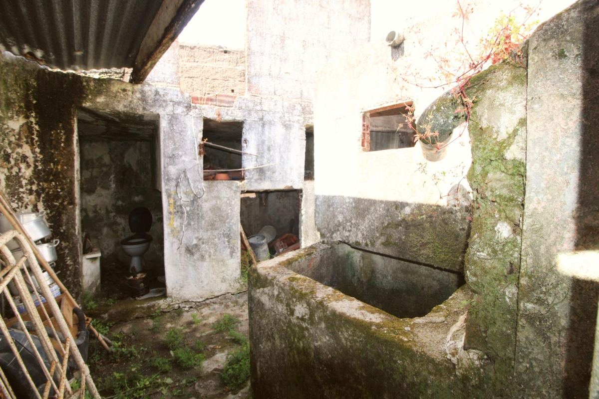

Casa da aldeia — 10 min de Torres Vedras
Hoje é uma habitação com um anexo. Aqui está a leitura das fotos divisão a divisão, e a proposta para a transformar em duas casas independentes para arrendar: a habitação passa a T3 e o anexo, com o pátio, passa a T2.
1 · O que cada foto mostra





É fácil de reconhecer: chão em mosaico, rodapés, tetos acabados, portas envernizadas, estores.
- Sala de entrada: porta e janela para a rua, teto liso, mosaico cor de tijolo, quadro elétrico por cima da porta.
- Segunda sala (teto liso, o mesmo mosaico), ligada à primeira e com passagem para os quartos.
- Quarto 1: teto em lambrim de madeira escura, mosaico a imitar parquet.
- Quarto 2: igual, com janela de portadas e estore; reboco caído e humidade em baixo.
- Quarto 3 / sala de jantar: teto em madeira, lustre, chão em ladrilho vinílico antigo a descolar.
- Alcova com janela, ligada ao quarto 3 por um vão largo sem porta.
As divisões comunicam entre si por portas. São as 6 divisões dos corpos poente e central.
Também é fácil de reconhecer: chão em cimento, paredes caiadas ou pintadas de amarelo, tetos em lambrim branco inclinado a acompanhar o telhado.
- Cozinha antiga: lareira de cozinha com forno a lenha, bancada em tijoleira, e duas escoras metálicas a segurar o teto.
- Divisão de entrada do anexo: contador e quadro, manchas de ferrugem, porta direta para o pátio do tanque.
- Divisão amarela (distribuidor): duas portas para outras divisões, janela pequena alta, teto de duas águas, ninho de andorinha no canto.
- Quarto pequeno com um postigo (janela muito pequena) e humidade por baixo.
- Casa de banho antiga: sanita, bidé, lavatório e base de duche em cimento; humidade até meio metro de altura.
É o corpo nascente: pátio + 4 divisões (mais o WC).
Problemas que se veem (e que pesam no orçamento)
- alta Teto do anexo escorado: as escoras na cozinha querem dizer que a madeira do telhado cedeu ou apodreceu. O ninho de andorinha mostra que entram aves, ou seja, há aberturas. Conta-se já com telhado novo no anexo.
- alta Humidade que sobe do chão em toda a casa: salitre nos rodapés, reboco a cair, marca horizontal no WC.
- alta Possível amianto na chapa ondulada do pátio e no ladrilho vinílico antigo do quarto 3. Tem de ser analisado antes de partir; se der positivo, a remoção é feita por empresa certificada.
- média Fissura horizontal no topo da fachada e fissuras na empena: um engenheiro tem de ver.
- média Eletricidade e canalização antigas, para substituir. O WC atual não serve.
- média O quarto pequeno do anexo só tem um postigo. Para ser quarto, a janela tem de ser aumentada (a lei pede janela com pelo menos 1/10 da área do chão).
2 · Como deve estar organizada hoje (esquema)
Esquema de leitura, sem escala, feito a partir do anúncio e das fotos. A posição exata de cada divisão confirma-se na visita, com fita métrica.
3 · Proposta: duas casas
A separação já existe: habitação de um lado, anexo do outro, sem ligação entre os dois. Aproveita-se isso. Cada casa fica com entrada própria, contadores próprios e exterior privado, e quase não se mexe em paredes-mestras.
- As duas salas da frente abrem-se numa só: sala e cozinha juntas, com entrada pela porta atual da rua e o alpendre.
- Quartos 1 e 2 mantêm-se como estão; os tetos em madeira são tratados e ficam (dão carácter).
- Quarto 3: tira-se o vinílico antigo (com análise de amianto) e põe-se chão novo.
- A alcova passa a casa de banho completa, encostada aos quartos.
- Fica com o logradouro das traseiras.
- Para quem: família, que é o que mais falta no arrendamento de aldeia.
- Telhado novo (é aqui que estão as escoras) e chão novo sobre os cimentos.
- A divisão de entrada e a divisão amarela abrem-se numa sala com cozinha, com porta para o pátio.
- A antiga cozinha passa a quarto 1. A lareira com forno sai, ou fica como nicho decorativo se a estrutura o permitir.
- O quarto pequeno passa a quarto 2, com a janela aumentada.
- O WC é refeito no mesmo sítio, porque a água e o esgoto já lá estão.
- Pátio: demolir as ruínas, ficar com um arrumo pequeno; o tanque vira canteiro ou é demolido.
- Para quem: casal que trabalha em Torres Vedras ou faz a A8 para Lisboa.
O ponto que decide tudo: o anexo está licenciado como habitação?
Na maioria das casas destas, o anexo está registado como dependência ou arrumos, não como casa. Para o arrendar como casa é preciso:
- pedir à Câmara a alteração de uso do anexo para habitação (com projeto);
- constituir propriedade horizontal (duas frações), ou outra forma de dividir o prédio aceite pela Câmara;
- ficar com licença de utilização para cada casa.
Antes de fazer uma oferta, pede a caderneta predial, a certidão do registo e a licença de utilização, e confirma na Câmara de Torres Vedras se este passo é possível. Se não for, a alternativa é arrendar a casa inteira como uma só, ou usar o anexo como apoio da habitação.
4 · Obra: o que fazer e por que ordem
- Visita com engenheiro civil: telhado do anexo, escoras, fissuras, humidades.
- Documentos: que área está licenciada, e com que uso (habitação ou anexo).
- Câmara: o anexo pode passar a habitação? A aldeia está numa ARU (Área de Reabilitação Urbana)?
- Análise de amianto (chapa e vinílico).
- Levantamento com medidas, projeto de arquitetura e especialidades.
- Alteração de uso do anexo e propriedade horizontal.
- Prazo realista: 4–8 meses.
- Limpeza e demolição das ruínas do pátio.
- Anexo: telhado novo. Habitação: rever as madeiras, pôr subtelha e isolamento.
- Humidade: corte na base das paredes, picar os rebocos e voltar a rebocar com argamassa de cal ou de saneamento; drenagem nas paredes de trás.
- Coser as fissuras e reforçar o topo da fachada.
- Eletricidade e água novas, com contadores separados para cada casa.
- 2 cozinhas e 2 casas de banho.
- Janelas com vidro duplo e corte térmico; aumentar a janela do quarto pequeno.
- Água quente com bomba de calor e ar condicionado nas salas.
- Habitação: manter o mosaico onde estiver bom. Anexo: betonilha e chão novo.
5 · Orçamento para ficar pronto a arrendar
Orçamento feito a partir das fotos, divisão a divisão, com acabamentos de gama média, resistentes e fáceis de manter, que é o que um inquilino espera numa casa de aldeia renovada. Valores com IVA a 23%, preços da região Oeste em 2026. Áreas estimadas: habitação com cerca de 80 m² e anexo com cerca de 55 m². Confirmar tudo com medidas e 2 ou 3 orçamentos de empreiteiro.
| Trabalho | Valor |
|---|---|
| Comum às duas casas | |
| Levantamento, engenheiro, análise de amianto | 2 500 € |
| Projeto, licença, alteração de uso do anexo, propriedade horizontal e taxas | 10 000 € |
| Limpeza, contentores, demolição das ruínas do pátio | 4 500 € |
| Remoção de amianto (chapa e vinílico), se der positivo | 2 500 € |
| Certificados energéticos e licenças de utilização | 800 € |
| Subtotal | 20 300 € |
| Casa B · T3 na habitação (~80 m²) | |
| Telhado: rever madeiras, subtelha, isolamento, telha revista | 8 000 € |
| Humidades: corte na base das paredes e rebocos novos | 5 500 € |
| Abrir a parede entre as duas salas, com viga | 2 000 € |
| Eletricidade nova, quadro, ITED | 4 500 € |
| Água e esgotos novos | 3 500 € |
| Casa de banho completa na alcova | 5 000 € |
| Cozinha com placa, forno e exaustor | 5 500 € |
| Janelas em PVC com vidro duplo e porta de entrada | 6 000 € |
| Chão novo na sala/cozinha e no quarto 3 (o resto mantém-se) | 1 500 € |
| Tetos de madeira lixados e pintados de claro | 1 500 € |
| Pintura interior | 3 000 € |
| Portas interiores | 1 500 € |
| Água quente por bomba de calor | 2 500 € |
| Ar condicionado na sala | 1 200 € |
| Fachada: fissura e pintura | 3 000 € |
| Subtotal | 54 200 € |
| Casa A · T2 no anexo, com pátio (~55 m²) | |
| Telhado novo (substitui as escoras) | 12 000 € |
| Humidades e rebocos novos | 5 000 € |
| Abrir a parede da sala, aumentar a janela, tirar o forno | 4 000 € |
| Betonilha com isolamento e chão novo | 4 500 € |
| Eletricidade nova e contador novo | 4 500 € |
| Água e esgotos novos | 3 500 € |
| Casa de banho refeita | 5 000 € |
| Cozinha com placa, forno e exaustor | 5 000 € |
| Janelas e portas exteriores | 5 000 € |
| Pintura interior | 2 000 € |
| Portas interiores | 900 € |
| Água quente por bomba de calor | 2 500 € |
| Ar condicionado na sala | 1 200 € |
| Pátio: chão, arrumo, estendal, muro divisório | 5 000 € |
| Subtotal | 60 100 € |
| Soma dos trabalhos | 134 600 € |
| Imprevistos (≈10%) | 13 500 € |
| Total para ficar pronto a arrendar | 148 100 € |
O que não está incluído: mobília (arrenda-se sem mobília), frigorífico e máquina de lavar (opcionais, cerca de 1 000 € por casa), juros de crédito e IMI durante a obra.
6 · Na Ventosa, 140 mil € faz sentido?
O que se vende na zona
- Moradia T3 para restaurar com 162 m², na Ventosa: 100 000 € (cerca de 620 €/m²).
- Moradia T2 térrea com 75 m²: 83 500 €.
- Ruína T3 com 70 m²: 63 000 €.
- T2 com 50 m², em acabamentos: 137 500 €. Mostra quanto vale uma casa pequena já pronta.
Preços pedidos em anúncios de 2026 (Imovirtual, RE/MAX, OLX), não preços de venda.
Rendas na zona
- Na cidade de Torres Vedras, os T2 pedem cerca de 900–1 000 € e os T3 cerca de 1 300 € (apartamentos).
- Numa aldeia a 10 minutos, com casa térrea renovada e exterior: T3 a 950–1 100 € e T2 a 750–850 €.
- Total: 20 400–23 400 € por ano.
| Compra a 140 000 € | Compra a 100 000 € | Compra a 80 000 € | |
|---|---|---|---|
| Compra | 140 000 € | 100 000 € | 80 000 € |
| IMT, imposto do selo, escritura e registo (estimativa) | 4 200 € | 2 800 € | 2 400 € |
| Obra pronta a arrendar | 148 100 € | 148 100 € | 148 100 € |
| Investimento total | 292 300 € | 250 900 € | 230 500 € |
| Rentabilidade bruta (20 400–23 400 €/ano) | 7,0–8,0% | 8,1–9,3% | 8,8–10,2% |
| Rentabilidade líquida aproximada (sem IMI, seguro, manutenção e impostos) | 4,5–5,5% | 6,0–7,0% | 6,5–7,5% |
| Valor das duas casas depois de prontas (estimativa) | 280–340 mil € | 280–340 mil € | 280–340 mil € |
Conclusão
A 140 mil €, o preço está alto. Dá cerca de 1 000 €/m² por uma casa que precisa de obra total, enquanto na mesma zona há moradias para restaurar a cerca de 620 €/m². Com 140 mil € de compra e quase 150 mil € de obra, o investimento total fica praticamente igual ao valor das duas casas depois de prontas. Não sobra margem de segurança se a obra correr mal.
Como investimento para arrendar a longo prazo, funciona (7–8% bruto): a Ventosa tem procura, porque fica perto da A8 e de Torres Vedras, e há poucas casas térreas com exterior para arrendar.
Recomendação: o preço justo está à volta dos 100 mil €. Abrir a 80 mil € e fechar entre 90 e 100 mil €, justificando com o telhado escorado do anexo, as humidades, o possível amianto e a necessidade de licenciar o anexo. Pôr na proposta uma condição: a compra só avança se a Câmara confirmar que o anexo pode passar a habitação.
Cenário-base: compra a 100 mil €
- Investimento total: ≈ 251 mil € (100 mil € de compra, cerca de 2 800 € de impostos e escritura, 148 mil € de obra).
- Rendas: 20 400–23 400 € por ano, o que dá 8,1–9,3% bruto.
- Despesas por ano: IMI, seguro, manutenção e 1 mês sem inquilino, cerca de 4 000 €. Sobram 16–19 mil € por ano antes de IRS, ou seja, cerca de 1 350–1 600 € por mês.
- Margem: as duas casas prontas valem 280–340 mil €, ou seja, 30 a 90 mil € acima do investimento.
- O dinheiro investido volta em cerca de 13–15 anos só com as rendas, e a casa continua a ser tua.
Estratégia de negociação: abrir a 80 mil €
A 80 mil €, o negócio fica bom: 8,8–10% bruto e uma margem de 50 a 110 mil € entre o que se investe e o que as duas casas valem depois de prontas.
80 mil € dá cerca de 590 €/m², em linha com a moradia para restaurar na Ventosa anunciada a cerca de 620 €/m². Argumentos para levar por escrito:
- O teto do anexo está escorado: precisa de telhado novo (cerca de 12 mil €).
- Há humidade em todas as divisões (cerca de 10 mil €).
- Possível amianto na chapa e no chão vinílico.
- Não há uma única casa de banho ou cozinha utilizável; a eletricidade e a canalização são para deitar fora.
- O anexo pode não estar licenciado como habitação: é um risco de licença que fica do lado de quem compra.
- Obra total estimada em cerca de 148 mil €, ou seja, mais do que o próprio preço pedido.
Plano: abrir a 80 mil €, contar com uma contraproposta, e tentar fechar entre 90 e 100 mil €. Limite para desistir: 115 mil €. A proposta deve ficar sempre condicionada à confirmação da Câmara sobre o anexo.
7 · Apoios e impostos a verificar
- IVA a 6% na empreitada, em vez de 23%, se o imóvel estiver numa ARU. Pode poupar 15 a 25 mil €.
- Benefícios de IMI e IMT para reabilitação em ARU, conforme o regulamento da Câmara.
- Contratos de arrendamento longos pagam menos IRS sobre as rendas. O Programa de Arrendamento Acessível pode dar isenção se a renda ficar abaixo do teto do concelho.
- Estas regras mudam com frequência: confirma com o contabilista e com a Câmara antes de assinar.
8 · Próximos passos
- Fazer a oferta (abrir a 80 mil €) e pedir caderneta predial, certidão do registo e licença de utilização.
- Confirmar na Câmara se o anexo pode passar a habitação e se o prédio pode ter duas frações. Se a resposta for não, o plano muda.
- Visitar com engenheiro e medir as divisões. Com as medidas reais, esta planta é refeita à escala.
- Pedir 2 ou 3 orçamentos de obra com base nesta proposta.
- Preço máximo a pagar: 115 mil €. Acima disto, a margem fica demasiado curta.